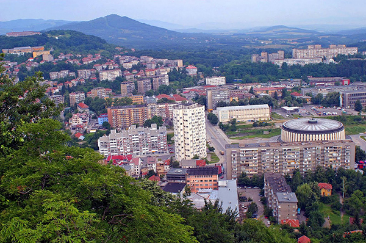
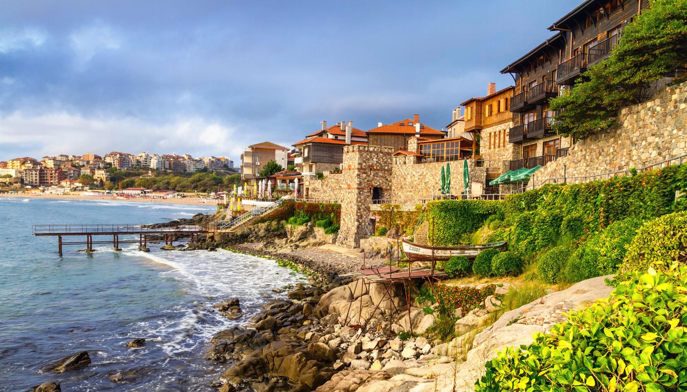
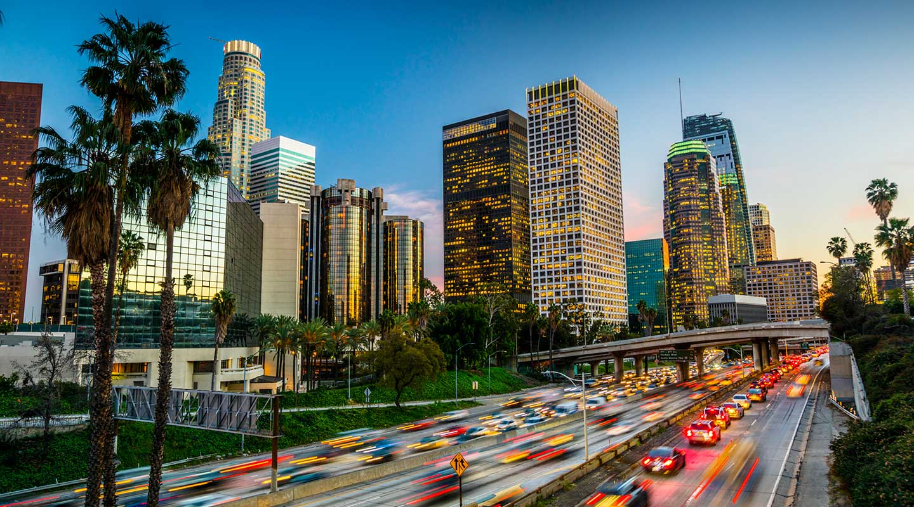
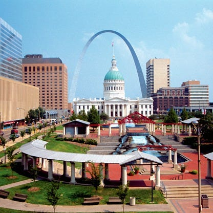

Cities where I have lived
Gabrovo, Bulgaria

I was born in Gabrovo, Bulgaria while my parents were finishing their doctoral degrees. Honestly, I have no memories as they graduated soon after and we moved to the city where my father is from.

Most of my childhood I spent in the city of Burgas, Bulgaria which is located on the Black Sea coast. Growing up I enjoyed going to the beach, windsurfing, playing tennis and soccer. When I was almost 6 my brother Miroslav was born. Just before I started high school my mother, who was an university professor was offered a teaching position in Paris, France and we moved there for 2 years.

Paris was everything I ever imagined and thought it could be. I struggled a lot with the language barrier but there was something magical in the air. After my mother's contract was up, she decided not to renew it and bring us back to Burgas.
When I graduated high school I decided to move to the USA to pursue a colleged degree. At the time I was very excited to be on my own, away from my parents, feeling like a grown-up! I first arrived in the United States I lived in Palm Springs, California. There I attended a small community college, at least back then it was small, College of the Desert.

Two years later I graduated and transferred to Univesity of Southern California to continue my education and pursue a bachelor's degree. Los Angeles was big and crazy! I made a lot of friends and was exposed to some of the most diverse culture that I had ever experiences. I met people of every creed and color. No matter what day or time it was, something was going on and the people who were doing it considered it THE MOST significant in the world. You don't know then new scarf of some obscure designer's collection, you don't know who some C-list celebrity or influencer is - what's wrong with you?!

After almost 10 years living the California I moved to Chicago to go to law school. I can't say that I ever felt like I belonged there or that I ever found a new social cirle. Chicago seemed very cold and unapproachable. I wanted to get a MBA while getting my JD and I applied to University of Chicago. Due to the schedule of the two programs I couldn't attend them simultaneously. The thought of spending more time in Chicago wasn't really appealing to me. One of the professors who interviewed me told me about the Washington Univerisity in St. Louis. At first that sounded totally crazy but after I visited the campus and met with some of the staff, I was hooked.

As soon as law school was over, I moved to St. Louis and attended Washington University in St. Louis. I have now been in St. Louis for almost 14 years and really enjoy it. I'm not sure if this is my last stop but for now the combination of a small city with big city opportunities and entertainment is working well for me.
Personal Journey to Software Development
I have always been drawn to the worlds of math, science, and computers. From a very early age I was fascinated by the idea of creation and electronics. When I was around 10 years of age I took my first steps with Visual Basic, Pascal and Fortran. Upon completion of LC101 I would like to continue my journey of learning to code. I hope some day to combine it with my knowledge and experience with finance to enter the fintech arena.